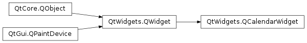
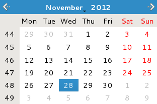

QCalendarWidget¶
Synopsis¶
Functions¶
- def
dateEditAcceptDelay() - def
dateTextFormat() - def
dateTextFormat(date) - def
firstDayOfWeek() - def
headerTextFormat() - def
horizontalHeaderFormat() - def
isDateEditEnabled() - def
isGridVisible() - def
isNavigationBarVisible() - def
maximumDate() - def
minimumDate() - def
monthShown() - def
selectedDate() - def
selectionMode() - def
setDateEditAcceptDelay(delay) - def
setDateEditEnabled(enable) - def
setDateTextFormat(date, format) - def
setFirstDayOfWeek(dayOfWeek) - def
setHeaderTextFormat(format) - def
setHorizontalHeaderFormat(format) - def
setMaximumDate(date) - def
setMinimumDate(date) - def
setSelectionMode(mode) - def
setVerticalHeaderFormat(format) - def
setWeekdayTextFormat(dayOfWeek, format) - def
updateCell(date) - def
updateCells() - def
verticalHeaderFormat() - def
weekdayTextFormat(dayOfWeek) - def
yearShown()
Slots¶
- def
setCurrentPage(year, month) - def
setDateRange(min, max) - def
setGridVisible(show) - def
setNavigationBarVisible(visible) - def
setSelectedDate(date) - def
showNextMonth() - def
showNextYear() - def
showPreviousMonth() - def
showPreviousYear() - def
showSelectedDate() - def
showToday()
Signals¶
- def
activated(date) - def
clicked(date) - def
currentPageChanged(year, month) - def
selectionChanged()
Detailed Description¶
The
PySide2.QtWidgets.QCalendarWidgetclass provides a monthly based calendar widget allowing the user to select a date.The widget is initialized with the current month and year, but
PySide2.QtWidgets.QCalendarWidgetprovides several public slots to change the year and month that is shown.By default, today’s date is selected, and the user can select a date using both mouse and keyboard. The currently selected date can be retrieved using the
PySide2.QtWidgets.QCalendarWidget.selectedDate()function. It is possible to constrain the user selection to a given date range by setting thePySide2.QtWidgets.QCalendarWidget.minimumDate()andPySide2.QtWidgets.QCalendarWidget.maximumDate()properties. Alternatively, both properties can be set in one go using thePySide2.QtWidgets.QCalendarWidget.setDateRange()convenience slot. Set thePySide2.QtWidgets.QCalendarWidget.selectionMode()property toNoSelectionto prohibit the user from selecting at all. Note that a date also can be selected programmatically using thePySide2.QtWidgets.QCalendarWidget.setSelectedDate()slot.The currently displayed month and year can be retrieved using the
PySide2.QtWidgets.QCalendarWidget.monthShown()andPySide2.QtWidgets.QCalendarWidget.yearShown()functions, respectively.A newly created calendar widget uses abbreviated day names, and both Saturdays and Sundays are marked in red. The calendar grid is not visible. The week numbers are displayed, and the first column day is the first day of the week for the calendar’s locale.
The notation of the days can be altered to a single letter abbreviations (“M” for “Monday”) by setting the
PySide2.QtWidgets.QCalendarWidget.horizontalHeaderFormat()property toQCalendarWidget.SingleLetterDayNames. Setting the same property toQCalendarWidget.LongDayNamesmakes the header display the complete day names. The week numbers can be removed by setting thePySide2.QtWidgets.QCalendarWidget.verticalHeaderFormat()property toQCalendarWidget.NoVerticalHeader. The calendar grid can be turned on by setting thegridVisible()property to true using thePySide2.QtWidgets.QCalendarWidget.setGridVisible()function:

Finally, the day in the first column can be altered using the
PySide2.QtWidgets.QCalendarWidget.setFirstDayOfWeek()function.The
PySide2.QtWidgets.QCalendarWidgetclass also provides three signals,PySide2.QtWidgets.QCalendarWidget.selectionChanged(),PySide2.QtWidgets.QCalendarWidget.activated()andPySide2.QtWidgets.QCalendarWidget.currentPageChanged()making it possible to respond to user interaction.The rendering of the headers, weekdays or single days can be largely customized by setting
PySide2.QtGui.QTextCharFormat‘s for some special weekday, a special date or for the rendering of the headers.Only a subset of the properties in
PySide2.QtGui.QTextCharFormatare used by the calendar widget. Currently, the foreground, background and font properties are used to determine the rendering of individual cells in the widget.
-
class
PySide2.QtWidgets.QCalendarWidget([parent=nullptr])¶ Parameters: parent – PySide2.QtWidgets.QWidgetConstructs a calendar widget with the given
parent.The widget is initialized with the current month and year, and the currently selected date is today.
-
PySide2.QtWidgets.QCalendarWidget.HorizontalHeaderFormat¶ This enum type defines the various formats the horizontal header can display.
Constant Description QCalendarWidget.SingleLetterDayNames The header displays a single letter abbreviation for day names (e.g. M for Monday). QCalendarWidget.ShortDayNames The header displays a short abbreviation for day names (e.g. Mon for Monday). QCalendarWidget.LongDayNames The header displays complete day names (e.g. Monday). QCalendarWidget.NoHorizontalHeader The header is hidden. See also
PySide2.QtWidgets.QCalendarWidget.horizontalHeaderFormat()QCalendarWidget.VerticalHeaderFormat
-
PySide2.QtWidgets.QCalendarWidget.VerticalHeaderFormat¶ This enum type defines the various formats the vertical header can display.
Constant Description QCalendarWidget.ISOWeekNumbers The header displays ISO week numbers as described by QDate.weekNumber().QCalendarWidget.NoVerticalHeader The header is hidden. See also
PySide2.QtWidgets.QCalendarWidget.verticalHeaderFormat()QCalendarWidget.HorizontalHeaderFormat
-
PySide2.QtWidgets.QCalendarWidget.SelectionMode¶ This enum describes the types of selection offered to the user for selecting dates in the calendar.
Constant Description QCalendarWidget.NoSelection Dates cannot be selected. QCalendarWidget.SingleSelection Single dates can be selected.
-
PySide2.QtWidgets.QCalendarWidget.activated(date)¶ Parameters: date – PySide2.QtCore.QDate
-
PySide2.QtWidgets.QCalendarWidget.clicked(date)¶ Parameters: date – PySide2.QtCore.QDate
-
PySide2.QtWidgets.QCalendarWidget.currentPageChanged(year, month)¶ Parameters: - year –
PySide2.QtCore.int - month –
PySide2.QtCore.int
- year –
-
PySide2.QtWidgets.QCalendarWidget.dateEditAcceptDelay()¶ Return type: PySide2.QtCore.int
-
PySide2.QtWidgets.QCalendarWidget.dateTextFormat(date)¶ Parameters: date – PySide2.QtCore.QDateReturn type: PySide2.QtGui.QTextCharFormatReturns a
PySide2.QtGui.QTextCharFormatfordate. The char format can be be empty if the date is not renderd specially.
-
PySide2.QtWidgets.QCalendarWidget.dateTextFormat() Return type: Returns a
QMapfromPySide2.QtCore.QDatetoPySide2.QtGui.QTextCharFormatshowing all dates that use a special format that alters their rendering.
-
PySide2.QtWidgets.QCalendarWidget.firstDayOfWeek()¶ Return type: PySide2.QtCore.Qt.DayOfWeek
-
PySide2.QtWidgets.QCalendarWidget.headerTextFormat()¶ Return type: PySide2.QtGui.QTextCharFormatReturns the text char format for rendering the header.
-
PySide2.QtWidgets.QCalendarWidget.horizontalHeaderFormat()¶ Return type: PySide2.QtWidgets.QCalendarWidget.HorizontalHeaderFormat
-
PySide2.QtWidgets.QCalendarWidget.isDateEditEnabled()¶ Return type: PySide2.QtCore.bool
-
PySide2.QtWidgets.QCalendarWidget.isGridVisible()¶ Return type: PySide2.QtCore.bool
Return type: PySide2.QtCore.bool
-
PySide2.QtWidgets.QCalendarWidget.maximumDate()¶ Return type: PySide2.QtCore.QDate
-
PySide2.QtWidgets.QCalendarWidget.minimumDate()¶ Return type: PySide2.QtCore.QDate
-
PySide2.QtWidgets.QCalendarWidget.monthShown()¶ Return type: PySide2.QtCore.intReturns the currently displayed month. Months are numbered from 1 to 12.
-
PySide2.QtWidgets.QCalendarWidget.paintCell(painter, rect, date)¶ Parameters: - painter –
PySide2.QtGui.QPainter - rect –
PySide2.QtCore.QRect - date –
PySide2.QtCore.QDate
Paints the cell specified by the given
date, using the givenpainterandrect.- painter –
-
PySide2.QtWidgets.QCalendarWidget.selectedDate()¶ Return type: PySide2.QtCore.QDate
-
PySide2.QtWidgets.QCalendarWidget.selectionChanged()¶
-
PySide2.QtWidgets.QCalendarWidget.selectionMode()¶ Return type: PySide2.QtWidgets.QCalendarWidget.SelectionMode
-
PySide2.QtWidgets.QCalendarWidget.setCurrentPage(year, month)¶ Parameters: - year –
PySide2.QtCore.int - month –
PySide2.QtCore.int
Displays the given
monthof the givenyearwithout changing the selected date. Use thePySide2.QtWidgets.QCalendarWidget.setSelectedDate()function to alter the selected date.The currently displayed month and year can be retrieved using the
PySide2.QtWidgets.QCalendarWidget.monthShown()andPySide2.QtWidgets.QCalendarWidget.yearShown()functions respectively.See also
PySide2.QtWidgets.QCalendarWidget.yearShown()PySide2.QtWidgets.QCalendarWidget.monthShown()PySide2.QtWidgets.QCalendarWidget.showPreviousMonth()PySide2.QtWidgets.QCalendarWidget.showNextMonth()PySide2.QtWidgets.QCalendarWidget.showPreviousYear()PySide2.QtWidgets.QCalendarWidget.showNextYear()- year –
-
PySide2.QtWidgets.QCalendarWidget.setDateEditAcceptDelay(delay)¶ Parameters: delay – PySide2.QtCore.int
-
PySide2.QtWidgets.QCalendarWidget.setDateEditEnabled(enable)¶ Parameters: enable – PySide2.QtCore.bool
-
PySide2.QtWidgets.QCalendarWidget.setDateRange(min, max)¶ Parameters: - min –
PySide2.QtCore.QDate - max –
PySide2.QtCore.QDate
Defines a date range by setting the
PySide2.QtWidgets.QCalendarWidget.minimumDate()andPySide2.QtWidgets.QCalendarWidget.maximumDate()properties.The date range restricts the user selection, i.e. the user can only select dates within the specified date range. Note that
calendar.setDateRange(min, max)
is analogous to
calendar.setMinimumDate(min) calendar.setMaximumDate(max)
If either the
minormaxparameters are not validPySide2.QtCore.QDateobjects, this function does nothing.- min –
-
PySide2.QtWidgets.QCalendarWidget.setDateTextFormat(date, format)¶ Parameters: - date –
PySide2.QtCore.QDate - format –
PySide2.QtGui.QTextCharFormat
Sets the format used to render the given
dateto that specified byformat.If
dateis null, all date formats are cleared.- date –
-
PySide2.QtWidgets.QCalendarWidget.setFirstDayOfWeek(dayOfWeek)¶ Parameters: dayOfWeek – PySide2.QtCore.Qt.DayOfWeek
-
PySide2.QtWidgets.QCalendarWidget.setGridVisible(show)¶ Parameters: show – PySide2.QtCore.bool
-
PySide2.QtWidgets.QCalendarWidget.setHeaderTextFormat(format)¶ Parameters: format – PySide2.QtGui.QTextCharFormatSets the text char format for rendering the header to
format. If you also set a weekday text format, this format’s foreground and background color will take precedence over the header’s format. The other formatting information will still be decided by the header’s format.
-
PySide2.QtWidgets.QCalendarWidget.setHorizontalHeaderFormat(format)¶ Parameters: format – PySide2.QtWidgets.QCalendarWidget.HorizontalHeaderFormat
-
PySide2.QtWidgets.QCalendarWidget.setMaximumDate(date)¶ Parameters: date – PySide2.QtCore.QDate
-
PySide2.QtWidgets.QCalendarWidget.setMinimumDate(date)¶ Parameters: date – PySide2.QtCore.QDate
Parameters: visible – PySide2.QtCore.bool
-
PySide2.QtWidgets.QCalendarWidget.setSelectedDate(date)¶ Parameters: date – PySide2.QtCore.QDate
-
PySide2.QtWidgets.QCalendarWidget.setSelectionMode(mode)¶ Parameters: mode – PySide2.QtWidgets.QCalendarWidget.SelectionMode
-
PySide2.QtWidgets.QCalendarWidget.setVerticalHeaderFormat(format)¶ Parameters: format – PySide2.QtWidgets.QCalendarWidget.VerticalHeaderFormat
-
PySide2.QtWidgets.QCalendarWidget.setWeekdayTextFormat(dayOfWeek, format)¶ Parameters: - dayOfWeek –
PySide2.QtCore.Qt.DayOfWeek - format –
PySide2.QtGui.QTextCharFormat
Sets the text char format for rendering of day in the week
dayOfWeektoformat. The format will take precedence over the header format in case of foreground and background color. Other text formatting information is taken from the headers format.- dayOfWeek –
-
PySide2.QtWidgets.QCalendarWidget.showNextMonth()¶ Shows the next month relative to the currently displayed month. Note that the selected date is not changed.
-
PySide2.QtWidgets.QCalendarWidget.showNextYear()¶ Shows the currently displayed month in the next year relative to the currently displayed year. Note that the selected date is not changed.
-
PySide2.QtWidgets.QCalendarWidget.showPreviousMonth()¶ Shows the previous month relative to the currently displayed month. Note that the selected date is not changed.
-
PySide2.QtWidgets.QCalendarWidget.showPreviousYear()¶ Shows the currently displayed month in the previous year relative to the currently displayed year. Note that the selected date is not changed.
-
PySide2.QtWidgets.QCalendarWidget.showSelectedDate()¶ Shows the month of the selected date.
-
PySide2.QtWidgets.QCalendarWidget.showToday()¶ Shows the month of the today’s date.
-
PySide2.QtWidgets.QCalendarWidget.updateCell(date)¶ Parameters: date – PySide2.QtCore.QDateUpdates the cell specified by the given
dateunless updates are disabled or the cell is hidden.
-
PySide2.QtWidgets.QCalendarWidget.updateCells()¶ Updates all visible cells unless updates are disabled.
-
PySide2.QtWidgets.QCalendarWidget.verticalHeaderFormat()¶ Return type: PySide2.QtWidgets.QCalendarWidget.VerticalHeaderFormat
-
PySide2.QtWidgets.QCalendarWidget.weekdayTextFormat(dayOfWeek)¶ Parameters: dayOfWeek – PySide2.QtCore.Qt.DayOfWeekReturn type: PySide2.QtGui.QTextCharFormatReturns the text char format for rendering of day in the week
dayOfWeek.
-
PySide2.QtWidgets.QCalendarWidget.yearShown()¶ Return type: PySide2.QtCore.intReturns the year of the currently displayed month. Months are numbered from 1 to 12.
© 2018 The Qt Company Ltd. Documentation contributions included herein are the copyrights of their respective owners. The documentation provided herein is licensed under the terms of the GNU Free Documentation License version 1.3 as published by the Free Software Foundation. Qt and respective logos are trademarks of The Qt Company Ltd. in Finland and/or other countries worldwide. All other trademarks are property of their respective owners.